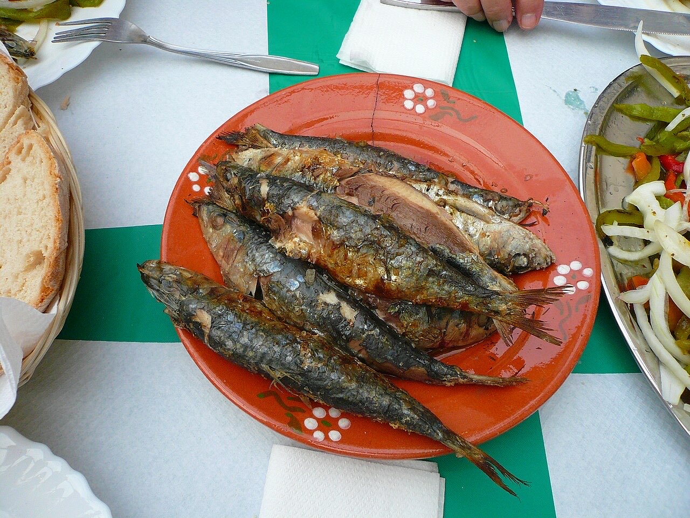
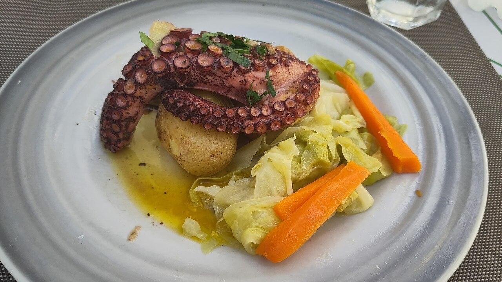
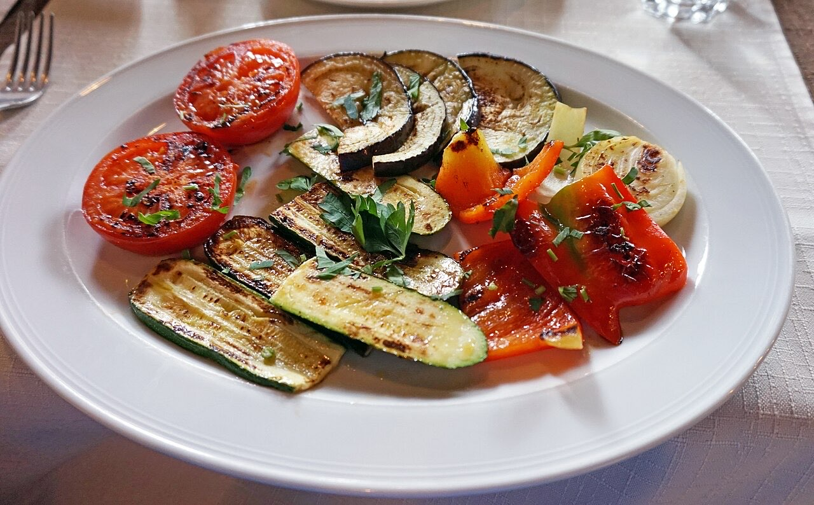

Restaurante espanhol / tapas · Centro
Tapas galegas no Largo do Toural
Gambas, sardinhas, calamares e polvo.
Cerca de 30 lugares, no 1.º andar.
Por QR code, sem esperar pela equipa.
A GarfoxFaca é uma tapearia nas Galerias Toural, no centro de Guimarães, numa sala pequena e intimista. Venha partilhar tapas com influências galegas, como gambas, calamares e polvo.



Fotografias ilustrativas — no site final usamos as vossas.
Novo · Pedidos por QR code
Menos espera nas horas de ponta, menos enganos nos pedidos e a equipa livre para servir.
Pedido de reserva
Escolha o dia e a hora — o pedido chega por WhatsApp e confirmamos logo.
↑ Assim chegaria a mensagem ao vosso WhatsApp. (Nesta demonstração nada é enviado.)
Onde estamos
| Dom–Seg | 12:30–15:00 |
|---|---|
| Ter · Qui | 12:30–15:00 · 19:30–22:30 |
| Qua | Encerrado |
| Sex–Sáb | 12:30–15:00 · 19:30–23:00 |
Proposta para GarfoxFaca (tapearia)
Esta página foi feita de propósito para GarfoxFaca (tapearia) por João Machado, programador web aqui de Guimarães. Inclui:
Eu trato do alojamento e da manutenção. Sem compromisso.